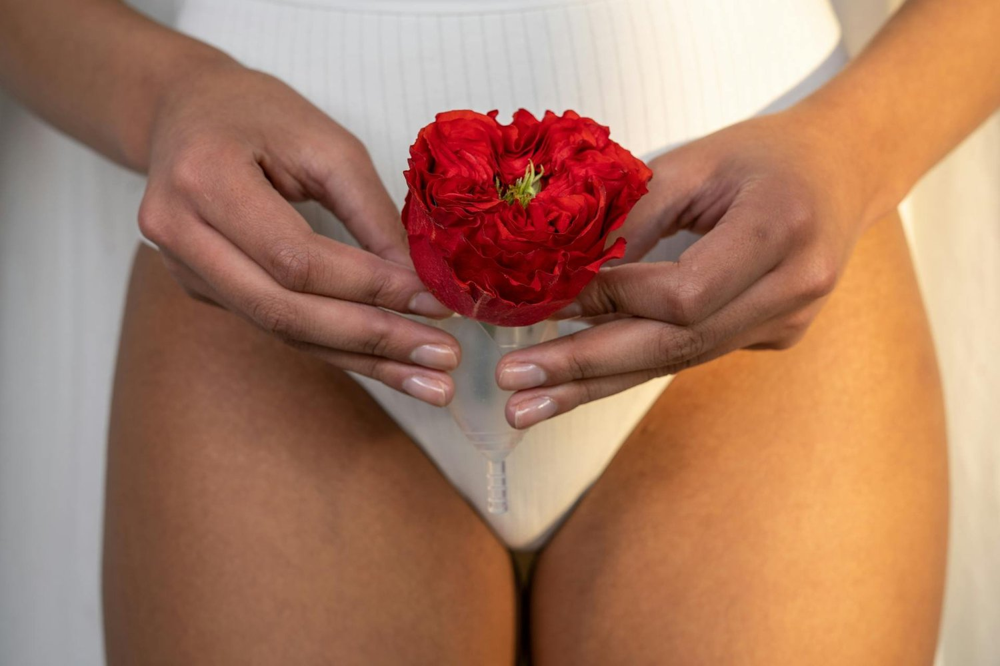

Skinsight: The Truth About Hormonal Acne

Hadiyah Daché, licensed cosmetologist & esthetician
Acne
3 min
← All articlesThe Book →Friendly reminder: this post contains affiliate links, which help support the Glowdega Archive. If you buy through them, I may earn a commission at no extra cost to you.
The term "hormonal acne" is commonly misunderstood in skin care. A convenient term adopted by medical professional and consumers alike, "hormonal acne" typically refers to breakouts along the jawline and neck that appear before or during a menstrual cycle and typically resolve afterward. The problem with this definition is that it's misleading. Acne is a chronic skin condition which means it is always present. It won't just come and go. Almost all breakouts result from hormonal triggers, either due to failure or imbalance. So acne does not need the qualifier of being "hormonal", that is always implied by the nature of the condition. "Hormonal acne" is redundant.
HORMONAL FLUCTUATIONS WILL UPGRADE YOUR ACNE
The pathophysiology of acne—the study of how this condition develops—is largely influenced by hormonal regulation. A recent study found that a higher ratio of androgen to estrogen may aggravate the acne type in patients with acne vulgaris. Meaning, if you already have acne then you are more likely to experience acne flares that may be more severe around your cycle. Another study linked cortisol levels during menstruation to acne severity as well. So if your acne typically looks like a few blackheads and whiteheads (Grade I acne), you might suddenly begin experiencing small pimples (Grade II acne) during your cycle. If you typically have a few small pimples and some pustules (Grade III acne) then you may get cysts and nodules (Grade IV acne) during your cycle. Estradiol, androgen, and cortisol are always present in the body but the ways in which these hormone levels fluctuate during the ovulation and luteal phases of our cycle can upgrade your breakouts to a higher acne level and exacerbate hyperpigmentation. But, again, you'd have to already have acne to experience this.
Another important thing to note is that the location of breakouts on your face has no relevant correlation to your cycle. You will breakout where your pores are most active. That can be your nose, your forehead, your face, your cheeks, and sometimes your chin/jawline. So your cycle does not cause breakouts on your jawline and jawline only.
WHY YOUR JAWLINE BREAKS OUT DURING YOUR CYCLE
The short answer: it's not a breakout. It's irritation from hair.
Hormones also influence hair growth and hormonal fluctuations that happen during our cycle can cause some of us to start growing hair in areas we typically don't. For many of us, that's facial hair along the—you guessed it!—jawline.
The body's process of making hormones is complex and in a constant state of change. Right before we get that first drop of blood, the body produces a lot of estradiol. This triggers a chain reaction involving the hypothalamus, pituitary gland, and the production of hormones like luteinizing hormone—which produces testosterone. If testosterone conversion to estradiol is disrupted, it can lead to excess androgens and unwanted facial hair growth.
Your pores and hair follicles are one in the same. A lot of times what you may think is a “deep blackhead” or cyst is actually irritation from hair growth. If you are a menstruating person, it’s common for your body to produce more hair during your cycle—and if you are a person experiencing PCOS or endometriosis then hair production during menstruation might really be in overdrive! It can be hard to tell the difference on the outside of the skin but you can typically tell by the response (or lack thereof) to the typical skin care products you may be trying to use to treat it. Inflamed and irritated hair doesn’t typically respond to benzoyl peroxide, retinoids or salicylic acid products. Icing also might bring redness down a bit but it won’t make much of a difference on the “size” of the inflamed area. If you can see the hair, plucking—while providing short-term relief—isn’t advised as it will create more hyperpigmentation and, in some instances, more inflammation. Your best bet for PERMANENTLY clearing irritation from hair is visiting an electrologist. We refer all of our clients to Ivana at Prime Electrolysis in El Sobrante!
HORMONAL ACNE IS A MYTH
We hope that after reading this post, you have a better understanding of how and why your breakouts change during your cycle. And, more than anything, we hope you stop using the term "hormonal acne" because it is a myth. You just have acne. Full stop. And for those who don't have acne, it's just a little hair growth.
To delve deeper into the connection between hormones and skin, or for personalized nutrition recommendations, consider booking a Nutritional Therapy Discovery Call with our team today!